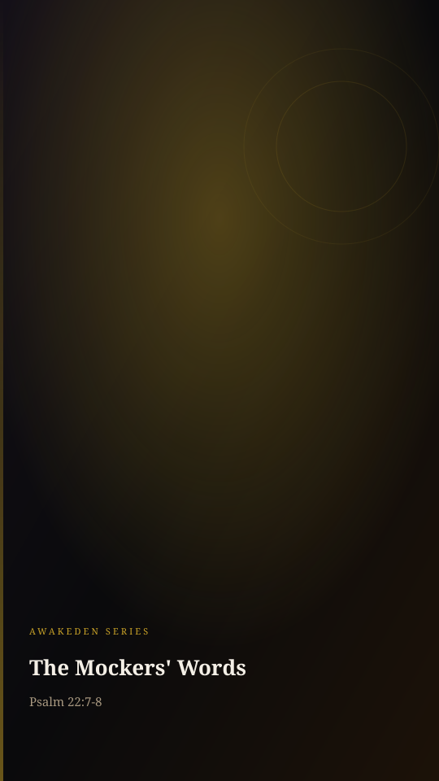

Video will be on YouTube when the series launches.
David wrote the mockers' gesture and their taunt. Matthew records both at the cross.
The study behind this
Psalm 22 is a cry of King David, set down roughly a thousand years before Christ. It opens in the voice of a man surrounded and abandoned, then bends, line by line, toward a suffering David himself never endured and a rescue that reaches the ends of the earth.
...they shake the head, saying, He trusted on the LORD that he would deliver him: let him deliver him...
Psalm 22:7-8
He trusted in God; let him deliver him now, if he will have him: for he said, I am the Son of God.
Matthew 27:43
The reading
The crowd mocking Jesus at the cross was reading from a script, they just didn't know it.
A thousand years before, Psalm twenty-two recorded how the Messiah would be mocked, the gestures, and the words.
...they shake the head, saying, He trusted on the LORD that he would deliver him: let him deliver him...
Psalm 22:7-8
At the cross, Matthew's gospel records it, the passers-by wagging their heads, the rulers sneering nearly line for line:
He trusted in God; let him deliver him now, if he will have him: for he said, I am the Son of God.
Matthew 27:43
They thought they were inventing the cruelty. They were reciting prophecy, unwilling witnesses that this was the One.
And they threw one more taunt at Him:
save thyself. If thou be the Son of God, come down from the cross.
Matthew 27:40
But He could have come down. He showed He was the Son not by escaping the cross, but by staying on it, bearing the scorn He could have silenced, for the very people throwing it.
The man they mocked is the One the whole song was about. They told the King to come down, and He never did. He stayed under scorn, theirs, and ours, to win the scorners. And they were reading from a script they never finished: the song ends with all the ends of the world turning to Him. Turn, and come to the One who would not come down.
Every quotation is the King James Version, verified word for word against the text.